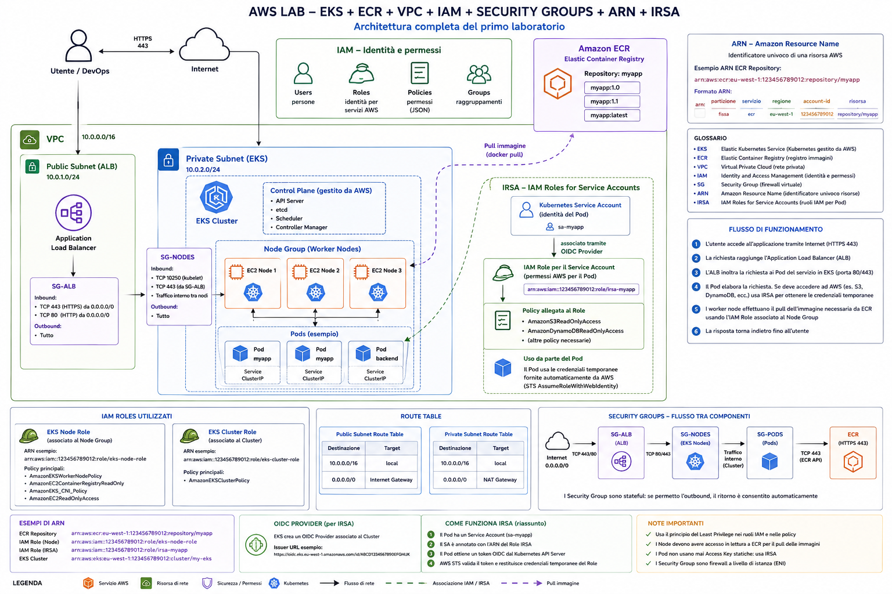

Amazon EKS, dalla teoria al runbook
Tutto letto attraverso il cluster che hai davvero in mano: a-4510-eks-mil-cluster-p-01, region eu-south-1 (Milano), account 122610509347. Ogni comando è incollabile così com'è.
Il tuo cluster, in 10 numeri
Dati letti dalla console il 2 settembre 2026. Il campo rosso è quello che ti sta costando soldi adesso.
Traduzione economica dello stato attuale. Il supporto standard di 1.32 è finito il 23 marzo 2026: da quel giorno il control plane è passato in extended support. Il control plane costa 0,10 $/ora per cluster in standard support e 0,60 $/ora in extended support — cioè circa 73 $/mese contro 438 $/mese, per lo stesso identico cluster. Il passaggio è automatico, senza approvazione, e l'unico modo per uscirne è l'upgrade. Fine dell'extended support: 23 marzo 2027, dopo di che AWS aggiorna d'ufficio.
01 Chi gestisce cosa
Se tieni a mente una sola cosa di EKS, tieni questa: AWS gestisce il control plane come un servizio chiuso, tu gestisci tutto il resto — nodi, rete, identità, add-on, workload.
Su Mirantis MKE o su OpenShift self-managed tu vedi i master, fai il backup di etcd, rinnovi i certificati kubeadm. Su EKS niente di tutto questo esiste: non hai SSH sui master, non vedi i pod di kube-apiserver, non fai backup di etcd. In cambio non puoi nemmeno mettere le mani su quei componenti quando qualcosa non torna: puoi solo leggere i log che AWS espone su CloudWatch e aprire un caso.
Le cinque parole che ti servono, in una riga ciascuna
| Termine | Che cos'è, detto senza giri | Nel tuo cluster |
|---|---|---|
| ARN | L'indirizzo completo e univoco di una risorsa AWS. Ovunque AWS ti chieda "quale risorsa", risponde un ARN. | arn:aws:eks:eu-south-1:122610509347:cluster/a-4510-eks-mil-cluster-p-01 |
| IAM | Il sistema di identità e permessi di AWS. Vive fuori da Kubernetes e decide chi può parlare con le API AWS. | Il ruolo del cluster: a-4510-iam-mil-clusterrole-p-01 |
| Node group | Un gruppo di EC2 identiche che fanno da worker, creato e mantenuto da EKS tramite un Auto Scaling Group. | 3 gruppi: apigwworkers (2), dbworkers (3), mainworkers (3) |
| IRSA | Il meccanismo che dà a un pod — non al nodo — credenziali AWS temporanee tramite il suo ServiceAccount. | Il controller EBS CSI usa il ruolo …-EBSCSIController |
| Add-on | Un componente di sistema del cluster (CNI, DNS, CSI…) installato e versionato da EKS invece che da te a mano. | 6 add-on, tutti con una versione più recente disponibile |
Il confine mentale che vale per tutto il resto della pagina. IAM risponde alla domanda "questa identità può chiamare questa API AWS?". RBAC di Kubernetes risponde a "questa identità può fare questa azione sugli oggetti del cluster?". Sono due sistemi separati che si toccano in due soli punti: l'autenticazione al cluster (access entry / aws-auth) e IRSA. Quasi tutti i problemi di permessi su EKS nascono dal confondere i due piani.
02 ARN — l'indirizzo di ogni cosa
ARN sta per Amazon Resource Name. È una stringa a sei campi separati da : che identifica in modo univoco una risorsa in tutto AWS. Non è un identificativo interno: è il modo in cui scrivi "questa risorsa qui" dentro policy, trust, comandi e configurazioni.
Decoder
Incolla un ARN qualsiasi e vedi come si scompone. Utile quando ne trovi uno in un errore e non capisci a cosa punta.
Gli ARN che incontri su EKS
| Risorsa | Forma |
|---|---|
| Cluster EKS | arn:aws:eks:eu-south-1:122610509347:cluster/a-4510-eks-mil-cluster-p-01 |
| Node group | arn:aws:eks:eu-south-1:122610509347:nodegroup/a-4510-eks-mil-cluster-p-01/a-4510-eks-mil-mainworkers-p-01/<uuid> |
| Ruolo IAM | arn:aws:iam::122610509347:role/a-4510-iam-mil-clusterrole-p-01 |
| Policy gestita da AWS | arn:aws:iam::aws:policy/AmazonEKSWorkerNodePolicy — l'account è la parola aws |
| Policy tua | arn:aws:iam::122610509347:policy/mia-policy-s3 |
| OIDC provider | arn:aws:iam::122610509347:oidc-provider/oidc.eks.eu-south-1.amazonaws.com/id/A07A065561AB58A4762449B95E2DC121 |
| Repository ECR | arn:aws:ecr:eu-south-1:122610509347:repository/myapp |
| Security group | arn:aws:ec2:eu-south-1:122610509347:security-group/sg-0abc123 |
| Secret di Secrets Manager | arn:aws:secretsmanager:eu-south-1:122610509347:secret:prod/db-AbCdEf — con suffisso random |
| Identità assunta via IRSA | arn:aws:sts::122610509347:assumed-role/<ruolo>/<session-name> — questa vedi nei log CloudTrail |
Il wildcard * è ammesso nelle policy, e lì nasce metà dei problemi di sicurezza: arn:aws:s3:::mio-bucket/* significa "tutti gli oggetti del bucket", mentre "Resource": "*" significa "qualunque risorsa dell'account". Il secondo in una policy di nodo è quello che fa scattare le review di sicurezza.
Recuperare gli ARN veri dalla CLI
aws sts get-caller-identity
aws eks describe-cluster --name a-4510-eks-mil-cluster-p-01 --region eu-south-1 \
--query 'cluster.{arn:arn,role:roleArn,oidc:identity.oidc.issuer,version:version,platform:platformVersion}' --output tableaws iam list-roles --query 'Roles[?contains(RoleName,`4510`)].[RoleName,Arn]' --output table
03 IAM — identità e permessi
IAM è il portiere di AWS. Ogni chiamata alle API AWS — creare un volume EBS, scaricare un'immagine da ECR, leggere un secret — viene valutata da IAM prima di essere eseguita. Kubernetes qui non c'entra ancora nulla.
I quattro oggetti, e a cosa servono davvero
Policy
Un documento JSON che elenca azioni permesse o negate su certe risorse. Da sola non fa nulla: è un pezzo di carta finché non la attacchi a qualcuno.
Role
Un'identità senza password che qualcuno può assumere temporaneamente. È il mattone di EKS: lo assumono le EC2 dei nodi, il control plane, e i pod via IRSA.
User
Un'identità con credenziali di lunga durata (password o access key). Nel data plane non dovrebbe comparire mai: le access key statiche nei pod sono l'anti-pattern numero uno.
Group
Solo un contenitore di user per attaccare policy in blocco. Non ha nulla a che vedere con i gruppi RBAC di Kubernetes, malgrado il nome.
Il pezzo che confonde tutti: le due policy di un role
Ogni ruolo IAM ha due documenti, e fanno cose diverse. Se non funziona qualcosa, il 90% delle volte è il primo, non il secondo.
| Documento | Risponde alla domanda | Dove lo trovi |
|---|---|---|
| Trust policy assume role policy | Chi può indossare questo ruolo. Un servizio EC2? Un altro account? Un ServiceAccount Kubernetes? | Console → ruolo → scheda "Trust relationships" |
| Permission policy una o più, allegate | Cosa può fare chi lo indossa: quali azioni su quali ARN. | Console → ruolo → scheda "Permissions" |
{
"Version": "2012-10-17",
"Statement": [{
"Effect": "Allow",
"Principal": { "Service": "ec2.amazonaws.com" },
"Action": "sts:AssumeRole"
}]
}{
"Version": "2012-10-17",
"Statement": [{
"Effect": "Allow",
"Action": ["s3:GetObject", "s3:ListBucket"],
"Resource": [
"arn:aws:s3:::a-4510-report-prod",
"arn:aws:s3:::a-4510-report-prod/*"
]
}]
}I ruoli che un cluster EKS ha per forza
| Ruolo | Chi lo assume | Policy tipiche |
|---|---|---|
| Cluster role a-4510-iam-mil-clusterrole-p-01 | Il servizio EKS (eks.amazonaws.com) per conto del control plane | AmazonEKSClusterPolicy — gli serve per creare ENI, aggiornare load balancer, leggere le subnet |
| Node role uno per node group | Le EC2 worker, tramite instance profile | AmazonEKSWorkerNodePolicy, AmazonEC2ContainerRegistryReadOnly (o …PullOnly), AmazonEKS_CNI_Policy |
| Ruoli IRSA uno per componente | I singoli pod tramite ServiceAccount | Solo i permessi di quel componente: EBS CSI, Load Balancer Controller, external-secrets… |
Perché AmazonEKS_CNI_Policy sul node role è discutibile. Quella policy permette di manipolare le ENI dell'istanza: se sta sul ruolo del nodo, ogni pod che riesce a raggiungere il metadata endpoint eredita quel potere. La pratica corretta è spostarla su un ruolo IRSA dedicato al ServiceAccount aws-node, e bloccare l'accesso a IMDS dai pod (hop limit a 1).
aws ec2 modify-instance-metadata-options --instance-id i-0abc123 \ --http-tokens required --http-put-response-hop-limit 1 --region eu-south-1
Ispezione rapida di un ruolo
aws iam get-role --role-name a-4510-iam-mil-clusterrole-p-01 --query 'Role.AssumeRolePolicyDocument'
aws iam list-attached-role-policies --role-name a-4510-iam-mil-clusterrole-p-01 --output table aws iam list-role-policies --role-name a-4510-iam-mil-clusterrole-p-01
aws iam simulate-principal-policy \
--policy-source-arn arn:aws:iam::122610509347:role/a-4510-eks-mil-cluster-p-01-EBSCSIController \
--action-names ec2:CreateVolume ec2:AttachVolume \
--query 'EvaluationResults[].{action:EvalActionName,decision:EvalDecision}' --output table04 IRSA — dare credenziali AWS a un pod
IAM Roles for Service Accounts risolve un problema preciso: un pod deve chiamare un'API AWS (creare un volume, leggere un secret) senza che tu gli metta dentro una access key, e senza dare quel permesso a tutti i pod del nodo.
Il problema che risolve
Senza IRSA hai due sole strade, entrambe brutte. La prima: metti una access key statica in un Secret Kubernetes — credenziali eterne, che ruotano solo se ci pensi tu, leggibili da chiunque abbia get secret. La seconda: attacchi il permesso al node role — e allora tutti i pod di quel nodo, compreso quello scritto male del fornitore, possono fare la stessa cosa.
IRSA introduce un terzo modo: il cluster ha un suo OIDC provider, il pod riceve un token firmato che dice "sono il ServiceAccount X nel namespace Y", e AWS scambia quel token con credenziali temporanee del ruolo che si fida esattamente di quel ServiceAccount.
Le tre cose che devono combaciare
IRSA fallisce sempre per uno di questi tre disallineamenti. Quando debugghi, controllali in quest'ordine.
- L'OIDC provider del cluster è registrato in IAM. Il cluster espone l'issuer comunque, ma se non esiste l'oggetto
oidc-providerin IAM, STS non si fida di nessun token. - La trust policy del ruolo cita esattamente quel ServiceAccount. Namespace e nome sono case-sensitive; un typo qui dà
AccessDeniede nient'altro. - Il ServiceAccount ha l'annotation con l'ARN giusto e il pod usa davvero quel ServiceAccount (non
default).
{
"Version": "2012-10-17",
"Statement": [{
"Effect": "Allow",
"Principal": {
"Federated": "arn:aws:iam::122610509347:oidc-provider/oidc.eks.eu-south-1.amazonaws.com/id/A07A065561AB58A4762449B95E2DC121"
},
"Action": "sts:AssumeRoleWithWebIdentity",
"Condition": {
"StringEquals": {
"oidc.eks.eu-south-1.amazonaws.com/id/A07A065561AB58A4762449B95E2DC121:aud": "sts.amazonaws.com",
"oidc.eks.eu-south-1.amazonaws.com/id/A07A065561AB58A4762449B95E2DC121:sub": "system:serviceaccount:kube-system:ebs-csi-controller-sa"
}
}
}]
}Usa StringEquals sul campo sub, non StringLike con *. Un system:serviceaccount:*:* in trust significa "qualunque pod di questo cluster può assumere il ruolo", e vanifica tutto IRSA. Se ti serve un ruolo per più SA, elencali in una lista dentro StringEquals.
Verificare l'OIDC provider
aws eks describe-cluster --name a-4510-eks-mil-cluster-p-01 --region eu-south-1 \ --query 'cluster.identity.oidc.issuer' --output text aws iam list-open-id-connect-providers
eksctl utils associate-iam-oidc-provider --cluster a-4510-eks-mil-cluster-p-01 --region eu-south-1 --approve
Creare un ruolo IRSA in un colpo solo
eksctl create iamserviceaccount \ --cluster a-4510-eks-mil-cluster-p-01 --region eu-south-1 \ --namespace app-prod --name s3-reader \ --attach-policy-arn arn:aws:iam::aws:policy/AmazonS3ReadOnlyAccess \ --role-name a-4510-iam-mil-s3reader-p-01 \ --approve
apiVersion: v1
kind: ServiceAccount
metadata:
name: s3-reader
namespace: app-prod
annotations:
eks.amazonaws.com/role-arn: arn:aws:iam::122610509347:role/a-4510-iam-mil-s3reader-p-01Provare che funziona davvero, dal pod
kubectl -n app-prod exec deploy/mia-app -- env | grep AWS_
AWS_ROLE_ARN=arn:aws:iam::122610509347:role/a-4510-iam-mil-s3reader-p-01 AWS_WEB_IDENTITY_TOKEN_FILE=/var/run/secrets/eks.amazonaws.com/serviceaccount/token AWS_STS_REGIONAL_ENDPOINTS=regional
kubectl -n app-prod run awscli --rm -it --restart=Never \
--overrides='{"spec":{"serviceAccountName":"s3-reader"}}' \
--image=amazon/aws-cli:latest -- sts get-caller-identitySe l'ARN che torna contiene assumed-role/a-4510-iam-mil-s3reader-p-01 IRSA funziona. Se contiene il nome del node role, l'annotation non è stata letta: il webhook inietta le variabili solo alla creazione del pod, quindi dopo aver annotato il SA devi far ripartire i pod.
IRSA o Pod Identity?
Dal 2023 esiste un secondo meccanismo, EKS Pod Identity, che fa la stessa cosa in modo più semplice: un add-on eks-pod-identity-agent sul cluster e un'associazione fra ServiceAccount e ruolo lato EKS, senza OIDC e senza trust policy con condizioni.
| IRSA | Pod Identity | |
|---|---|---|
| Trust policy del ruolo | Una per cluster, con condizioni su sub/aud | Una sola, uguale sempre, verso pods.eks.amazonaws.com |
| Riuso dello stesso ruolo su più cluster | Va aggiunta una condizione per ogni cluster | Immediato |
| Prerequisiti | OIDC provider registrato | Add-on agent installato sui nodi |
| Fargate | Sì | No |
| Cosa hai tu oggi | Questo — la colonna "EKS Pod Identity: Not set" degli add-on lo conferma | Non attivo |
Non c'è fretta di migrare: convivono, e IRSA resta pienamente supportato. Ha senso valutare Pod Identity quando il numero di ruoli inizia a fare male, o quando lo stesso componente gira su molti cluster.
05 Node group — dove girano davvero i pod
Un managed node group è un insieme di EC2 identiche che EKS crea, registra al cluster e aggiorna per te. Sotto c'è un normale Auto Scaling Group; sopra ci sono nodi Kubernetes con label, taint e un ciclo di vita gestito.
Le tre famiglie di compute, e quando usarle
| Tipo | Chi fa cosa | Quando ha senso |
|---|---|---|
| Managed node group | EKS crea l'ASG, aggiorna l'AMI, fa cordon e drain durante l'update rispettando i PDB | Default per il 90% dei casi. È quello che hai. |
| Self-managed | Ti crei tu ASG, AMI e bootstrap; EKS non sa nulla dell'aggiornamento | AMI custom con hardening pesante, GPU particolari, requisiti che il managed non copre |
| Fargate | Niente nodi: ogni pod è una micro-VM. Nessun DaemonSet, nessun volume EBS | Job isolati, workload a burst. Raramente adatto a stack bancari con sidecar e agent |
| EKS Auto Mode | AWS gestisce anche i nodi: provisioning, patch, consolidamento. Costo maggiorato sull'EC2 | Cluster nuovi dove non vuoi gestire capacity. Non retrofittabile a cuor leggero |
Il tuo layout a tre gruppi
Tre node group separati con nomi apigwworkers, dbworkers, mainworkers è un pattern di segregazione: workload diversi su hardware diverso, blast radius separato, e soprattutto la possibilità di aggiornare un gruppo alla volta. È anche il motivo per cui su un cluster così un upgrade non è mai "un" upgrade: sono tre finestre, o tre onde della stessa finestra.
aws eks list-nodegroups --cluster-name a-4510-eks-mil-cluster-p-01 --region eu-south-1 --output table
aws eks describe-nodegroup --cluster-name a-4510-eks-mil-cluster-p-01 \
--nodegroup-name a-4510-eks-mil-mainworkers-p-01 --region eu-south-1 \
--query 'nodegroup.{k8s:version,ami:releaseVersion,amiType:amiType,type:instanceTypes,cap:capacityType,scaling:scalingConfig,subnets:subnets,role:nodeRole,health:health.issues}'for ng in $(aws eks list-nodegroups --cluster-name a-4510-eks-mil-cluster-p-01 --region eu-south-1 --query 'nodegroups[]' --output text); do
aws eks describe-nodegroup --cluster-name a-4510-eks-mil-cluster-p-01 --nodegroup-name $ng --region eu-south-1 \
--query "nodegroup.[nodegroupName,version,releaseVersion,amiType,scalingConfig.desiredSize,status]" --output text
doneVista dal lato Kubernetes
kubectl get nodes -L eks.amazonaws.com/nodegroup,topology.kubernetes.io/zone,node.kubernetes.io/instance-type -o wide
kubectl get nodes -o custom-columns='NODE:.metadata.name,MAXPODS:.status.allocatable.pods,CPU:.status.allocatable.cpu,MEM:.status.allocatable.memory'
kubectl get nodes -l eks.amazonaws.com/nodegroup=a-4510-eks-mil-dbworkers-p-01
Scaling e capacità
aws eks update-nodegroup-config --cluster-name a-4510-eks-mil-cluster-p-01 \ --nodegroup-name a-4510-eks-mil-mainworkers-p-01 --region eu-south-1 \ --scaling-config minSize=3,maxSize=6,desiredSize=4 \ --update-config maxUnavailable=1
maxUnavailable vale sia per lo scaling sia per gli update dell'AMI: è il numero di nodi che EKS può togliere contemporaneamente. Su un gruppo da 3 nodi, 1 è l'unico valore ragionevole. Esiste anche maxUnavailablePercentage, più comodo sui gruppi grandi.
Label e taint gestiti da EKS
aws eks update-nodegroup-config --cluster-name a-4510-eks-mil-cluster-p-01 \
--nodegroup-name a-4510-eks-mil-dbworkers-p-01 --region eu-south-1 \
--labels 'addOrUpdateLabels={workload=database,tier=data}'aws eks update-nodegroup-config --cluster-name a-4510-eks-mil-cluster-p-01 \
--nodegroup-name a-4510-eks-mil-dbworkers-p-01 --region eu-south-1 \
--taints 'addOrUpdateTaints=[{key=workload,value=database,effect=NO_SCHEDULE}]'Label e taint messi con kubectl label node spariscono al primo replacement del nodo, che durante un upgrade succede a tutti. Se devono sopravvivere, vanno dichiarati sul node group.
Il legame con l'ASG
Il gruppo è gestito, ma sotto c'è un ASG normale che a volte devi guardare — per esempio quando i nodi non nascono e vuoi vedere l'errore vero (subnet senza IP, capacità esaurita nella AZ, quota EC2).
ASG=$(aws eks describe-nodegroup --cluster-name a-4510-eks-mil-cluster-p-01 \ --nodegroup-name a-4510-eks-mil-mainworkers-p-01 --region eu-south-1 \ --query 'nodegroup.resources.autoScalingGroups[0].name' --output text) aws autoscaling describe-scaling-activities --auto-scaling-group-name $ASG --region eu-south-1 \ --max-items 10 --query 'Activities[].[StartTime,StatusCode,Cause]' --output text
06 Autoscaling
Tre livelli distinti che si confondono facilmente: HPA scala i pod, Cluster Autoscaler o Karpenter scalano i nodi, VPA cambia le richieste dei pod.
| Componente | Cosa muove | Come decide |
|---|---|---|
| HPA | Numero di repliche di un Deployment | Metriche (CPU/memoria via metrics-server, o custom). Nessun legame con AWS. |
| Cluster Autoscaler | desiredSize dei node group | Guarda i pod Pending e alza l'ASG. Vuole i tag k8s.io/cluster-autoscaler/… sull'ASG e un ruolo IRSA. |
| Karpenter | Istanze EC2 dirette, senza ASG | Calcola l'istanza migliore per i pod pendenti, la avvia in ~40 s, e consolida spegnendo nodi sottoutilizzati. |
| VPA | requests/limits dei pod | Storico dei consumi. Da usare in modalità Off per raccomandazioni, prima di lasciarlo agire. |
kubectl top nodes kubectl top pods -A --sort-by=memory | head -20
aws autoscaling create-or-update-tags --region eu-south-1 --tags \ ResourceId=$ASG,ResourceType=auto-scaling-group,Key=k8s.io/cluster-autoscaler/enabled,Value=true,PropagateAtLaunch=false \ ResourceId=$ASG,ResourceType=auto-scaling-group,Key=k8s.io/cluster-autoscaler/a-4510-eks-mil-cluster-p-01,Value=owned,PropagateAtLaunch=false
Cluster Autoscaler e Karpenter non vanno usati insieme sugli stessi workload. Su un cluster con node group tipizzati per ruolo come il tuo, il Cluster Autoscaler è la scelta coerente: Karpenter dà il meglio quando accetti che la forma della flotta la decida lui.
07 Rete: VPC, CNI e il conto degli IP
Su EKS ogni pod prende un IP reale della VPC. Niente overlay, niente NAT interno: è la differenza più grossa rispetto a un cluster on-prem con OVN, e ha una conseguenza pratica pesante — gli IP finiscono.
Il vincolo che sorprende: max pods per nodo
Il VPC CNI assegna a ogni pod un IP secondario di una ENI dell'istanza. Quante ENI e quanti IP per ENI dipende dal tipo di istanza, quindi il numero massimo di pod per nodo è una proprietà dell'hardware, non una scelta.
max_pods = ( ENI_max × (IPv4_per_ENI − 1) ) + 2
| Istanza | ENI | IP per ENI | max pods |
|---|---|---|---|
t3.medium | 3 | 6 | 17 |
m5.large / m6i.large | 3 | 10 | 29 |
m5.xlarge / m6i.xlarge | 4 | 15 | 58 |
m5.2xlarge | 4 | 15 | 58 |
m5.4xlarge | 8 | 30 | 234 |
I sidecar contano. Un cluster con service mesh consuma un IP per pod applicativo comunque, ma raddoppia i container: è la CPU a finire prima, non gli IP. Senza mesh, su nodi piccoli, finiscono prima gli IP.
kubectl get node <nodo> -o jsonpath='{.status.allocatable.pods}{"\n"}'kubectl set env daemonset aws-node -n kube-system ENABLE_PREFIX_DELEGATION=true kubectl set env daemonset aws-node -n kube-system WARM_PREFIX_TARGET=1
Va abilitata prima che le subnet siano frammentate: richiede blocchi /28 contigui liberi. Su una VPC vissuta a lungo può fallire proprio per frammentazione.
Subnet, AZ e il tag che serve ai load balancer
| Tag sulla subnet | Serve a |
|---|---|
kubernetes.io/role/elb = 1 | Subnet pubbliche → dove il Load Balancer Controller crea gli ALB/NLB internet-facing |
kubernetes.io/role/internal-elb = 1 | Subnet private → load balancer interni |
kubernetes.io/cluster/<nome-cluster> = shared|owned | Discovery del cluster (storico, ancora usato da diversi controller) |
aws ec2 describe-subnets --region eu-south-1 \
--filters "Name=tag:kubernetes.io/cluster/a-4510-eks-mil-cluster-p-01,Values=owned,shared" \
--query 'Subnets[].{id:SubnetId,az:AvailabilityZone,cidr:CidrBlock,free:AvailableIpAddressCount}' --output tableEndpoint del control plane
L'API server ha due endpoint, e la combinazione decide chi può fare kubectl e come i nodi parlano con il control plane.
| Configurazione | Effetto |
|---|---|
| Public | API raggiungibile da Internet (filtrabile per CIDR). I nodi escono verso l'endpoint pubblico via NAT. |
| Public + Private | Configurazione più comune: dall'esterno via CIDR autorizzati, dai nodi via DNS privato dentro la VPC. |
| Private only | Nessun accesso da Internet: kubectl solo da dentro la VPC, da un bastion o via VPN/Direct Connect. È l'assetto tipico degli ambienti bancari. |
aws eks describe-cluster --name a-4510-eks-mil-cluster-p-01 --region eu-south-1 \
--query 'cluster.resourcesVpcConfig.{public:endpointPublicAccess,private:endpointPrivateAccess,cidrs:publicAccessCidrs,sg:clusterSecurityGroupId,subnets:subnetIds}'aws eks update-cluster-config --name a-4510-eks-mil-cluster-p-01 --region eu-south-1 \ --resources-vpc-config endpointPublicAccess=true,endpointPrivateAccess=true,publicAccessCidrs="203.0.113.0/24"
In private-only servono gli VPC endpoint per i servizi che i nodi usano, altrimenti il bootstrap fallisce in silenzio: ecr.api, ecr.dkr, s3 (gateway, per i layer delle immagini), ec2, sts, logs, elasticloadbalancing. Il sintomo classico è un nodo che resta fuori dal cluster o pod fermi in ImagePullBackOff con timeout, non con 403.
Security group
Tre livelli, spesso confusi tra loro:
- Cluster security group — creato da EKS, applicato al control plane e ai nodi gestiti. Consente il traffico nodi↔control plane. Toccarlo a mano è quasi sempre un errore.
- SG del node group — quelli che aggiungi tu (via launch template) per il traffico verso database, storage, sistemi esterni.
- Security group per pod — con
SecurityGroupPolicyassegni un SG a un singolo pod tramite ENI dedicata. Utile quando un solo microservizio deve raggiungere un DB con regole strette, ma richiedeENABLE_POD_ENI=truee non è supportato su tutti i tipi di istanza.
apiVersion: vpcresources.k8s.aws/v1beta1
kind: SecurityGroupPolicy
metadata:
name: db-access
namespace: app-prod
spec:
serviceAccountSelector:
matchLabels:
app: payments
securityGroups:
groupIds:
- sg-0db1122334455Esporre servizi
| Oggetto | Cosa crea in AWS |
|---|---|
Service type=LoadBalancer | Con il Load Balancer Controller: un NLB. Senza controller: il vecchio CLB dell'in-tree provider. |
Ingress + classe alb | Un Application Load Balancer, con target group verso i pod (target-type ip) o verso i NodePort (instance). |
| Gateway API | Supportata dal LBC recente; è la strada dove sta andando l'ecosistema dopo il ritiro di ingress-nginx upstream. |
metadata:
annotations:
alb.ingress.kubernetes.io/scheme: internal
alb.ingress.kubernetes.io/target-type: ip
alb.ingress.kubernetes.io/listen-ports: '[{"HTTPS":443}]'
alb.ingress.kubernetes.io/certificate-arn: arn:aws:acm:eu-south-1:122610509347:certificate/xxxx-xxxx
alb.ingress.kubernetes.io/healthcheck-path: /healthz
alb.ingress.kubernetes.io/load-balancer-attributes: idle_timeout.timeout_seconds=12008 Storage
EBS per i volumi a singolo nodo, EFS quando serve ReadWriteMany. Entrambi arrivano come driver CSI, ed entrambi hanno bisogno di un ruolo IRSA per poter creare volumi.
| EBS CSI | EFS CSI | |
|---|---|---|
| Access mode | ReadWriteOnce — un solo nodo alla volta | ReadWriteMany — condiviso fra pod e AZ |
| Vincolo AZ | Il volume è legato a una AZ: il pod ci torna sempre | Nessuno, è NFS gestito |
| Prestazioni | Basse latenze, IOPS dichiarabili (gp3) | Latenza NFS, throughput a burst o provisioned |
| Uso tipico | Database, code, storage di stato | Contenuti condivisi, file di appoggio fra pod |
Nel tuo cluster l'EBS CSI Driver è già add-on gestito, in versione v1.41.0-eksbuild.1, con ruolo IRSA a-4510-eks-mil-cluster-p-01-EBSCSIController. Quel ruolo è ciò che permette al controller di chiamare ec2:CreateVolume e ec2:AttachVolume: se qualcuno lo tocca, i PVC restano Pending per sempre.
apiVersion: storage.k8s.io/v1
kind: StorageClass
metadata:
name: gp3
annotations:
storageclass.kubernetes.io/is-default-class: "true"
provisioner: ebs.csi.aws.com
volumeBindingMode: WaitForFirstConsumer
allowVolumeExpansion: true
reclaimPolicy: Delete
parameters:
type: gp3
iops: "3000"
throughput: "125"
encrypted: "true"
kmsKeyId: arn:aws:kms:eu-south-1:122610509347:key/xxxxxxxx-xxxxWaitForFirstConsumer non è un dettaglio: senza, il volume viene creato in una AZ a caso e il pod può restare Pending perché non c'è capacità in quella zona.
kubectl describe pvc <pvc> -n <ns> kubectl -n kube-system logs deploy/ebs-csi-controller -c csi-provisioner --tail=100
aws ec2 describe-volumes --region eu-south-1 \
--filters "Name=tag:kubernetes.io/cluster/a-4510-eks-mil-cluster-p-01,Values=owned" \
--query 'Volumes[].{id:VolumeId,size:Size,type:VolumeType,state:State,az:AvailabilityZone,pvc:Tags[?Key==`kubernetes.io/created-for/pvc/name`]|[0].Value}' --output tableCon reclaimPolicy: Delete il volume EBS sparisce insieme al PVC. Per gli stateful che contano usa una StorageClass con Retain: costa qualche volume orfano da ripulire, ma evita la telefonata brutta.
09 Add-on — i componenti di sistema, versionati da EKS
Un add-on EKS è un componente che in un cluster vanilla installeresti a mano con un manifest o un chart — CNI, kube-proxy, CoreDNS, driver CSI — e che qui viene installato, versionato e aggiornato dall'API di EKS.
La differenza pratica: senza add-on gestito, l'aggiornamento di quei componenti durante un upgrade Kubernetes è un tuo problema, con un manifest da scaricare dalla versione giusta. Con l'add-on gestito, chiedi una versione e EKS applica il manifest corretto, decidendo cosa fare se hai modificato i campi a mano (resolveConflicts).
I sei del tuo cluster
| Add-on | Cosa fa | IRSA |
|---|---|---|
vpc-cni | Assegna gli IP della VPC ai pod. È il pezzo di rete: si aggiorna con cautela e mai in contemporanea ad altro. | Consigliato (aws-node) |
kube-proxy | Programma le regole iptables/IPVS per i Service. Deve seguire da vicino la versione del control plane. | Non serve |
coredns | DNS interno del cluster. Due repliche di default: su cluster grandi vanno alzate. | Non serve |
aws-ebs-csi-driver | Crea, attacca e monta i volumi EBS. v1.41.0-eksbuild.1 nel tuo cluster. | Sì — …-EBSCSIController |
eks-pod-identity-agent | Alternativa a IRSA, se installato. La colonna "EKS Pod Identity: Not set" dice che non lo stai usando. | — |
metrics-server / altri | Metriche per HPA e kubectl top, oppure osservabilità. | Dipende |
Comandi
aws eks list-addons --cluster-name a-4510-eks-mil-cluster-p-01 --region eu-south-1 --output table
aws eks describe-addon --cluster-name a-4510-eks-mil-cluster-p-01 --addon-name aws-ebs-csi-driver --region eu-south-1 \
--query 'addon.{v:addonVersion,status:status,role:serviceAccountRoleArn,issues:health.issues}'aws eks describe-addon-versions --addon-name vpc-cni --kubernetes-version 1.33 --region eu-south-1 \
--query 'addons[].addonVersions[].{version:addonVersion,default:compatibilities[0].defaultVersion}' --output tableaws eks update-addon --cluster-name a-4510-eks-mil-cluster-p-01 --region eu-south-1 \ --addon-name aws-ebs-csi-driver --addon-version v1.4x.x-eksbuild.x \ --resolve-conflicts PRESERVE
--resolve-conflicts | Comportamento |
|---|---|
NONE | Se hai modificato campi che l'add-on gestisce, l'update fallisce. Default prudente. |
PRESERVE | Tiene le tue modifiche e aggiorna il resto. È quello giusto se hai tunato risorse o variabili d'ambiente. |
OVERWRITE | Riporta tutto al manifest AWS. Le tue personalizzazioni spariscono senza avviso. |
aws eks create-addon --cluster-name a-4510-eks-mil-cluster-p-01 --region eu-south-1 \ --addon-name coredns --resolve-conflicts OVERWRITE
aws eks update-addon --cluster-name a-4510-eks-mil-cluster-p-01 --region eu-south-1 \
--addon-name coredns \
--configuration-values '{"replicaCount":3,"resources":{"requests":{"cpu":"200m","memory":"128Mi"}}}'Lo schema accettato lo leggi con aws eks describe-addon-configuration --addon-name coredns --addon-version <v>: evita di tirare a indovinare le chiavi.
"New versions are available for 6 add-ons" nel tuo cluster non è un dettaglio cosmetico: gli add-on hanno finestre di compatibilità con la versione Kubernetes, e nell'upgrade a 1.33 alcuni di questi devono salire prima o insieme al control plane. Vedi l'ordine nella sezione upgrade.
10 Accessi al cluster — dove IAM incontra RBAC
Per entrare in un cluster EKS servono due permessi distinti: uno IAM per farsi autenticare, e uno RBAC per poter fare qualcosa. Storicamente il ponte era il ConfigMap aws-auth; oggi è l'API delle access entry.
aws-auth o access entry?
| ConfigMap aws-auth | Access entry (API) | |
|---|---|---|
| Dove vive | Un ConfigMap in kube-system: per modificarlo devi già essere dentro | API AWS: gestibile con IAM, Terraform, CloudFormation |
| Errore tipico | Un YAML sbagliato ti chiude fuori dal cluster, senza rimedio semplice | Nessun lock-out: correggi da AWS |
| Audit | Nessuno | CloudTrail |
| Modalità del cluster | CONFIG_MAP | API oppure API_AND_CONFIG_MAP per la transizione |
aws eks describe-cluster --name a-4510-eks-mil-cluster-p-01 --region eu-south-1 --query 'cluster.accessConfig'
aws eks update-cluster-config --name a-4510-eks-mil-cluster-p-01 --region eu-south-1 \ --access-config authenticationMode=API_AND_CONFIG_MAP
La transizione è a senso unico: da CONFIG_MAP puoi andare a API_AND_CONFIG_MAP e poi a API, mai tornare indietro. Prima di passare a API puro, verifica che ogni riga di aws-auth abbia la sua access entry — nodi compresi.
aws eks create-access-entry --cluster-name a-4510-eks-mil-cluster-p-01 --region eu-south-1 \ --principal-arn arn:aws:iam::122610509347:role/a-4510-ops-readonly aws eks associate-access-policy --cluster-name a-4510-eks-mil-cluster-p-01 --region eu-south-1 \ --principal-arn arn:aws:iam::122610509347:role/a-4510-ops-readonly \ --policy-arn arn:aws:eks::aws:cluster-access-policy/AmazonEKSViewPolicy \ --access-scope type=cluster
| Access policy | Equivalente RBAC |
|---|---|
AmazonEKSClusterAdminPolicy | cluster-admin — da tenere per pochissimi |
AmazonEKSAdminPolicy | Admin su namespace, senza toccare oggetti cluster-wide critici |
AmazonEKSEditPolicy | Modifica dei workload |
AmazonEKSViewPolicy | Sola lettura |
Con --access-scope type=namespace,namespaces=app-prod,app-coll limiti la stessa policy a specifici namespace: è il modo pulito per dare "edit solo sul mio namespace" a un team applicativo senza scrivere RBAC a mano.
kubectl -n kube-system get configmap aws-auth -o yaml
aws eks update-kubeconfig --name a-4510-eks-mil-cluster-p-01 --region eu-south-1 --alias eks-mil-prod
kubectl auth can-i --list --namespace app-prod kubectl auth can-i delete deployments -n app-prod
Se usi un ruolo assunto (SSO, assume-role), l'ARN da mappare è quello del ruolo — arn:aws:iam::…:role/NomeRuolo — non quello della sessione arn:aws:sts::…:assumed-role/NomeRuolo/utente. È la causa numero uno di "Unauthorized" con credenziali apparentemente valide.
11 ECR — il registry
ECR è il registry di AWS. L'autenticazione non è una password fissa: è un token di 12 ore che ti fai emettere da IAM. Per i nodi, invece, è trasparente: se il node role ha la policy giusta, il pull funziona senza imagePullSecrets.
aws ecr get-login-password --region eu-south-1 | docker login --username AWS --password-stdin 122610509347.dkr.ecr.eu-south-1.amazonaws.com
aws ecr create-repository --repository-name myapp --region eu-south-1 \ --image-scanning-configuration scanOnPush=true --image-tag-mutability IMMUTABLE
docker build -t myapp:1.4.0 . docker tag myapp:1.4.0 122610509347.dkr.ecr.eu-south-1.amazonaws.com/myapp:1.4.0 docker push 122610509347.dkr.ecr.eu-south-1.amazonaws.com/myapp:1.4.0
aws ecr describe-images --repository-name myapp --region eu-south-1 \
--query 'sort_by(imageDetails,&imagePushedAt)[-10:].{tag:imageTags[0],pushed:imagePushedAt,mb:imageSizeInBytes}' --output table{
"rules": [
{ "rulePriority": 1, "description": "keep last 20 tagged",
"selection": { "tagStatus": "tagged", "tagPrefixList": ["v","release"], "countType": "imageCountMoreThan", "countNumber": 20 },
"action": { "type": "expire" } },
{ "rulePriority": 2, "description": "expire untagged after 7 days",
"selection": { "tagStatus": "untagged", "countType": "sinceImagePushed", "countUnit": "days", "countNumber": 7 },
"action": { "type": "expire" } }
]
}Applicala con aws ecr put-lifecycle-policy --repository-name myapp --lifecycle-policy-text file://policy.json --region eu-south-1.
Pull cross-account. Se il cluster sta in un account e il registry in un altro, serve una repository policy sul repo che autorizza il node role dell'altro account. Il fallimento tipico è 403 Forbidden in ImagePullBackOff: 403 significa "autenticato ma non autorizzato", quindi guardi la policy del repository, non il login.
12 Log e osservabilità
I log del control plane non esistono finché non li accendi, e quando li accendi cominciano a costare. Vanno attivati con criterio: audit e authenticator sono quelli che risolvono i casi veri.
| Tipo di log | A cosa serve |
|---|---|
api | Richieste all'API server: latenze, errori, throttling |
audit | Chi ha fatto cosa e quando. Indispensabile in contesto bancario |
authenticator | Traduzione IAM → identità Kubernetes: è qui che si legge perché un accesso è stato rifiutato |
controllerManager / scheduler | Pod che non partono, volumi che non si attaccano, scheduling anomalo |
aws eks describe-cluster --name a-4510-eks-mil-cluster-p-01 --region eu-south-1 \
--query 'cluster.logging.clusterLogging[].{types:types,enabled:enabled}'aws eks update-cluster-config --name a-4510-eks-mil-cluster-p-01 --region eu-south-1 \
--logging '{"clusterLogging":[{"types":["audit","authenticator"],"enabled":true}]}'aws logs start-query --region eu-south-1 \ --log-group-name /aws/eks/a-4510-eks-mil-cluster-p-01/cluster \ --start-time $(date -v-2H +%s) --end-time $(date +%s) \ --query-string 'fields @timestamp, user.username, verb, objectRef.resource, objectRef.name | filter verb="delete" | sort @timestamp desc | limit 50'
Su Linux, date -d '2 hours ago' +%s al posto di date -v-2H.
kubectl get events -A --sort-by=.lastTimestamp | tail -40
13 Upgrade runbook
Un upgrade EKS è sempre lo stesso ciclo ripetuto per un solo minor alla volta: verifiche, control plane, nodi, add-on. Non si salta una versione e non si torna indietro.
Il vincolo che ti riguarda per primo: Amazon Linux 2 finisce con 1.32. Da 1.33 in avanti AWS non pubblica più AMI EKS-optimized basate su AL2, solo AL2023. Se i tuoi tre node group sono su AL2_x86_64, il salto a 1.33 non è solo un cambio di versione: è anche un cambio di sistema operativo, con bootstrap diverso (nodeadm al posto di bootstrap.sh), cgroup v2 e default di sicurezza diversi. Verificalo prima di pianificare qualsiasi finestra.
for ng in $(aws eks list-nodegroups --cluster-name a-4510-eks-mil-cluster-p-01 --region eu-south-1 --query 'nodegroups[]' --output text); do
aws eks describe-nodegroup --cluster-name a-4510-eks-mil-cluster-p-01 --nodegroup-name $ng --region eu-south-1 \
--query "nodegroup.[nodegroupName,amiType,releaseVersion]" --output text
doneFase 0 — verifiche, giorni prima
Le Upgrade Insights fanno da sole gran parte del lavoro di analisi: API deprecate ancora usate, kubelet troppo indietro, incompatibilità note. Il tuo cluster ne ha una in errore: quella va letta e risolta prima di tutto il resto.
aws eks list-insights --cluster-name a-4510-eks-mil-cluster-p-01 --region eu-south-1 \
--query 'insights[].{id:id,name:name,status:insightStatus.status,reason:insightStatus.reason}' --output tableaws eks describe-insight --cluster-name a-4510-eks-mil-cluster-p-01 --region eu-south-1 --id <insight-id> \
--query 'insight.{name:name,desc:description,rec:recommendation,details:categorySpecificSummary.deprecationDetails}'aws eks describe-cluster-versions --region eu-south-1 --output table
- IP liberi: il control plane ha bisogno di indirizzi liberi nelle subnet per creare le nuove ENI durante l'aggiornamento. Subnet sature = upgrade che fallisce a metà.
- PDB sensati: un PDB con
minAvailableuguale alle repliche blocca ogni drain. Censiscili prima, non durante. - Capacità per il surge: durante l'update dei nodi EKS ne aggiunge di nuovi prima di togliere i vecchi. Servono quota EC2 e IP.
- Compatibilità applicativa: chart Helm, operator, CRD e agent (Dynatrace e simili) hanno matrici di supporto proprie.
kubectl get pdb -A -o custom-columns='NS:.metadata.namespace,NAME:.metadata.name,MIN:.spec.minAvailable,MAX:.spec.maxUnavailable,ALLOWED:.status.disruptionsAllowed'
Fase 0-bis — API deprecate: trovarle davvero
Le Upgrade Insights coprono le API rimosse nella prossima versione, ma vedono solo il traffico recente registrato dall'API server: un job che gira una volta al mese, o un chart mai applicato dopo l'ultimo deploy, non compaiono. Per questo si incrociano tre fonti: cosa il cluster ha ricevuto, cosa è installato adesso, cosa c'è nei tuoi manifest e chart.
1 · Cosa l'API server ha davvero ricevuto
kubectl get --raw /metrics | grep apiserver_requested_deprecated_apis
apiserver_requested_deprecated_apis{group="flowcontrol.apiserver.k8s.io",removed_release="1.32",resource="flowschemas",subresource="",version="v1beta3"} 1
# group/version/resource = cosa viene chiamato
# removed_release = la versione in cui sparisce: se e' <= al tuo target, e' bloccanteLa metrica dice cosa, non chi. Per il chiamante serve l'audit log: è l'unico posto dove compare lo userAgent.
audit attivo)aws logs start-query --region eu-south-1 \
--log-group-name /aws/eks/a-4510-eks-mil-cluster-p-01/cluster \
--start-time $(date -d '30 days ago' +%s) --end-time $(date +%s) \
--query-string 'fields @timestamp, userAgent, user.username, objectRef.apiGroup, objectRef.apiVersion, objectRef.resource
| filter objectRef.apiVersion like /beta/
| stats count(*) by userAgent, objectRef.apiGroup, objectRef.apiVersion, objectRef.resource
| sort count desc | limit 100'aws logs get-query-results --region eu-south-1 --query-id <query-id>
Trenta giorni è il minimo sensato: sotto quella finestra i job mensili sfuggono. Se l'audit non è attivo da abbastanza tempo, accendilo ora e pianifica l'upgrade dopo un mese di raccolta.
2 · Cosa è installato adesso nel cluster
pluto detect-helm --target-versions k8s=v1.33 -A -o wide pluto detect-api-resources --target-versions k8s=v1.33 -o wide
kubent --target-version 1.33 --cluster --helm3 --exit-error
--exit-error restituisce exit code diverso da zero se trova qualcosa: è il modo per infilarlo in una pipeline e bloccare una promozione.
kubectl api-resources --sort-by=name -o wide | grep -v -E '^(NAME|.*\.k8s\.io|.*kubernetes\.io)' | head -60 kubectl get crd -o custom-columns='CRD:.metadata.name,GROUP:.spec.group,VERSIONS:.spec.versions[*].name,STORED:.status.storedVersions'
kubectl get crd -o json | jq -r '.items[] | select(.spec.versions[].name | test("v1beta|v1alpha")) | "\(.metadata.name)\t\(.spec.versions[].name)"' | sort -u3 · Cosa c'è nei manifest e nei chart, prima che vengano applicati
pluto detect-files -d ./manifests --target-versions k8s=v1.33 -o wide kubent --target-version 1.33 --filename ./manifests
helm template mia-release ./chart -f values-prod.yaml | pluto detect - --target-versions k8s=v1.33
kubectl convert -f vecchio.yaml --output-version apps/v1 > nuovo.yaml
Attenzione allo storedVersion dei CRD. Un CRD può servire v1 ma avere ancora v1beta1 in status.storedVersions: finché è lì, la vecchia versione non può essere rimossa dal CRD e l'operator che la fornisce non può essere aggiornato senza una migrazione degli oggetti esistenti. Si risolve rileggendo e riscrivendo ogni oggetto di quel tipo, poi ripulendo storedVersions — procedura del vendor dell'operator, non improvvisabile.
Fase 0-ter — operator, controller e agent
Il control plane si aggiorna sempre; è tutto quello che ci sta sopra a rompersi. Ogni operator dichiara una finestra di versioni Kubernetes supportate, e su un cluster bancario ce ne sono più di quanti se ne ricordino. La regola operativa: censisci, verifica la matrice, aggiorna quelli fuori finestra prima del control plane.
helm list -A -o table
kubectl get deploy,ds -A -o custom-columns='NS:.metadata.namespace,KIND:.kind,NAME:.metadata.name,IMAGE:.spec.template.spec.containers[*].image' \ | grep -E 'kube-system|monitoring|istio|cert-manager|argocd|external-secrets|dynatrace|operators'
kubectl get csv -A -o custom-columns='NS:.metadata.namespace,NAME:.metadata.name,VERSION:.spec.version,PHASE:.status.phase' 2>/dev/null
| Componente installato sul cluster | Perché è sensibile all'upgrade | Come leggi la versione |
|---|---|---|
| Istio istio-base, istio-system, via Helm | Matrice di supporto stretta verso Kubernetes e webhook di injection con failurePolicy critico. L'ordine corretto è quasi sempre mesh prima, cluster dopo | istioctl version · helm list -n istio-system |
| cert-manager | Conversion webhook sui propri CRD: se i pod del webhook sono giù durante il drain, ogni operazione su Certificate e Issuer fallisce, e con essa i rinnovi | helm list -A | grep cert-manager |
| EDB Postgres for Kubernetes postgresql-operator-system | Il più delicato dei tuoi: il drain dei nodi dbworkers provoca switchover dei cluster Postgres. Vanno verificati prima ruolo primario, stato della replica e PDB dei cluster gestiti | kubectl -n postgresql-operator-system get deploy -o wide · kubectl get cluster.postgresql.k8s.enterprisedb.io -A |
| Dynatrace Operator ns dynatrace | DaemonSet privilegiato che legge cgroup e container runtime: il salto AL2 → AL2023 (cgroup v2) lo tocca più della versione Kubernetes | kubectl -n dynatrace get deploy,ds -o wide |
| AWS Load Balancer Controller elbv2.k8s.aws | CRD TargetGroupBinding e webhook propri; le versioni vecchie non conoscono le API più recenti e possono rifiutare Ingress dopo l'upgrade | kubectl -n kube-system get deploy aws-load-balancer-controller -o jsonpath='{..image}' |
| Secrets Store CSI Driver | Monta segreti come volumi tramite IRSA: dopo l'upgrade un pod che non riparte spesso è un mount fallito, non un problema applicativo | kubectl get ds -A | grep -i secrets-store |
| AWS Private CA issuer | Estende cert-manager: va aggiornato in coppia con lui, mai da solo | kubectl get deploy -A | grep -i pca |
| CloudWatch Observability add-on gestito | Essendo add-on EKS ha una versione minima per ogni release Kubernetes: rientra nella Fase 2, non va dimenticato fra i "componenti terzi" | aws eks describe-addon --addon-name amazon-cloudwatch-observability --cluster-name a-4510-eks-mil-cluster-p-01 --region eu-south-1 |
| VPC CNI network policy policyendpoints, eniconfigs | Fa parte del CNI: si aggiorna con l'add-on vpc-cni, mai separatamente e mai insieme al drain dei nodi | aws eks describe-addon --addon-name vpc-cni … |
Nessun OLM, nessun Prometheus Operator, nessun Karpenter e nessuna Gateway API in questo cluster: l'inventario CRD è tutto qui, e semplifica parecchio l'analisi. I componenti senza CRD — cluster-autoscaler, metrics-server, agent vari — non compaiono in kubectl get crd: vanno cercati con l'inventario Deployment/DaemonSet qui sopra.
Il gruppo dbworkers merita una fase a sé. Aggiornare quei nodi significa far ruotare i primari Postgres gestiti dall'operator EDB. Prima della finestra: verifica che ogni cluster abbia repliche in stato healthy, che il primario non sia sull'ultimo nodo da drenare, e che esista un backup valido. Durante: un nodo alla volta, con verifica dello switchover fra uno e l'altro. Se possibile, fai lo switchover controllato tu prima del drain, invece di lasciarlo provocare dall'eviction.
kubectl get cluster.postgresql.k8s.enterprisedb.io -A -o custom-columns='NS:.metadata.namespace,NAME:.metadata.name,INSTANCES:.spec.instances,READY:.status.readyInstances,PRIMARY:.status.currentPrimary,PHASE:.status.phase'
kubectl get pods -A -l role=primary -o custom-columns='NS:.metadata.namespace,POD:.metadata.name,NODE:.spec.nodeName'
Webhook: la trappola che blocca l'upgrade a metà
Un webhook ammissione con failurePolicy: Fail il cui backend non è raggiungibile rifiuta ogni scrittura sugli oggetti che intercetta. Durante il drain dei nodi succede esattamente questo: il pod del webhook viene sfrattato, e da quel momento le creazioni di pod falliscono.
kubectl get validatingwebhookconfigurations -o custom-columns='NAME:.metadata.name,POLICY:.webhooks[*].failurePolicy,SVC:.webhooks[*].clientConfig.service.name' kubectl get mutatingwebhookconfigurations -o custom-columns='NAME:.metadata.name,POLICY:.webhooks[*].failurePolicy,SVC:.webhooks[*].clientConfig.service.name'
Per ognuno con Fail: il servizio dietro deve avere più repliche, anti-affinity fra nodi e un PDB coerente, altrimenti l'upgrade dei nodi si auto-blocca. È il motivo tipico di un drain che resta appeso senza un errore evidente.
Prova generale su un cluster non produttivo
Il modo affidabile per validare operator e applicazioni resta ripetere l'intera sequenza su un ambiente gemello — collaudo o pre-produzione — con gli stessi chart e la stessa versione di partenza. Le insight e pluto trovano le API rotte; solo l'esecuzione trova i webhook lenti, i PDB assurdi e gli agent che non ripartono su AL2023.
Checklist di finestra
| Quando | Cosa |
|---|---|
| D-30 | Attiva i log audit e authenticator se spenti: servono trenta giorni di traffico per fidarsi dell'analisi delle API deprecate |
| D-14 | Insight risolte · pluto/kubent puliti su cluster, manifest e chart · matrice operator verificata · amiType dei tre gruppi noto (AL2 o AL2023) |
| D-7 | Stessa sequenza eseguita in collaudo, fino ai nodi · PDB e webhook rivisti · IP liberi nelle subnet e quota EC2 verificati · backup applicativo dei volumi che contano |
| D-1 | Freeze dei deploy · fotografia dello stato: kubectl get all -A, kubectl get pv,pvc -A, versioni add-on e node group salvate su file |
| D0 | Control plane → add-on minimi → un node group alla volta, dal meno critico · verifica funzionale fra un gruppo e l'altro |
| D+1 | Nessun pod fuori posto · insight nuovamente PASSING · agent di monitoraggio che riportano · costo del cluster tornato alla tariffa standard se sei uscito dall'extended |
Fase 1 — control plane
Dura tipicamente 25–40 minuti, non ha impatto sui workload in esecuzione, ma non è annullabile. Durante l'operazione l'API server resta disponibile.
aws eks update-cluster-version --name a-4510-eks-mil-cluster-p-01 --region eu-south-1 --kubernetes-version 1.33
aws eks describe-update --name a-4510-eks-mil-cluster-p-01 --region eu-south-1 --update-id <update-id> \
--query 'update.{status:status,type:type,errors:errors}'aws eks describe-cluster --name a-4510-eks-mil-cluster-p-01 --region eu-south-1 --query 'cluster.[version,platformVersion,status]' --output text kubectl version
Fase 2 — add-on che devono seguire subito
Alcuni add-on hanno un minimo compatibile con la nuova versione. kube-proxy in particolare non deve restare indietro rispetto al control plane, e il CNI va allineato prima di toccare i nodi.
for a in vpc-cni kube-proxy coredns aws-ebs-csi-driver; do
echo "== $a"
aws eks describe-addon-versions --addon-name $a --kubernetes-version 1.33 --region eu-south-1 \
--query 'addons[0].addonVersions[?compatibilities[0].defaultVersion==`true`].addonVersion' --output text
doneaws eks update-addon --cluster-name a-4510-eks-mil-cluster-p-01 --region eu-south-1 \ --addon-name kube-proxy --addon-version <versione> --resolve-conflicts PRESERVE kubectl -n kube-system rollout status ds/kube-proxy
Fase 3 — node group
Qui c'è l'impatto vero: ogni nodo viene sostituito, quindi ogni pod viene sfrattato almeno una volta. EKS fa cordon, drain e terminazione nel rispetto dei PDB.
aws eks update-nodegroup-version --cluster-name a-4510-eks-mil-cluster-p-01 --region eu-south-1 \ --nodegroup-name a-4510-eks-mil-apigwworkers-p-01 --kubernetes-version 1.33
aws eks update-nodegroup-version --cluster-name a-4510-eks-mil-cluster-p-01 --region eu-south-1 \ --nodegroup-name a-4510-eks-mil-mainworkers-p-01
watch -n 20 "kubectl get nodes -L eks.amazonaws.com/nodegroup --sort-by=.metadata.creationTimestamp"
--force esiste e ignora i PDB pur di completare l'aggiornamento. Su un cluster di produzione bancaria è l'ultima risorsa, non l'opzione di default: se un drain si blocca, la risposta giusta è capire quale PDB lo blocca e perché, non forzare l'eviction di un quorum.
kubectl get pdb -A | awk '$5==0' kubectl -n <ns> describe pdb <nome>
Alternativa blue/green, quando il rollback conta più della semplicità
L'update in-place non ha marcia indietro: se la nuova AMI ha un problema, l'unico rimedio è un altro update. La strategia con rollback vero è creare un nuovo node group già alla versione di destinazione, spostarci i workload, e tenere il vecchio spento ma esistente per qualche giorno.
eksctl create nodegroup --cluster a-4510-eks-mil-cluster-p-01 --region eu-south-1 \ --name a-4510-eks-mil-mainworkers-p-02 --node-type m6i.xlarge --nodes 3 --nodes-min 3 --nodes-max 6 \ --node-ami-family AmazonLinux2023 --version 1.33
kubectl cordon -l eks.amazonaws.com/nodegroup=a-4510-eks-mil-mainworkers-p-01 kubectl drain <nodo> --ignore-daemonsets --delete-emptydir-data --timeout=600s
aws eks delete-nodegroup --cluster-name a-4510-eks-mil-cluster-p-01 --region eu-south-1 \ --nodegroup-name a-4510-eks-mil-mainworkers-p-01
Fase 4 — chiusura
kubectl get nodes -o custom-columns='NODE:.metadata.name,KUBELET:.status.nodeInfo.kubeletVersion,OS:.status.nodeInfo.osImage,RUNTIME:.status.nodeInfo.containerRuntimeVersion'
kubectl get pods -A --field-selector=status.phase!=Running,status.phase!=Succeeded kubectl get events -A --sort-by=.lastTimestamp | tail -30
aws eks list-insights --cluster-name a-4510-eks-mil-cluster-p-01 --region eu-south-1 \ --query 'insights[?insightStatus.status!=`PASSING`]' --output table
Politica di supporto, in una riga. 14 mesi di supporto standard per ogni minor, poi 12 mesi di extended a costo sestuplicato, poi upgrade automatico da parte di AWS. Con un rilascio ogni quattro mesi circa, una cadenza di upgrade trimestrale o semestrale è ciò che tiene il cluster dentro la finestra standard senza corse.
14 Troubleshooting — dal sintomo alla causa
Pod in ImagePullBackOff
| Messaggio | Causa | Verifica |
|---|---|---|
403 Forbidden da ECR | Il node role non ha i permessi di pull, o manca la repository policy cross-account | aws iam list-attached-role-policies --role-name <node-role> |
no basic auth credentials | Registry esterno senza imagePullSecret | kubectl get sa default -n <ns> -o yaml |
Timeout / i/o timeout | Nodi in subnet private senza NAT o senza VPC endpoint per ecr.dkr, ecr.api, s3 | aws ec2 describe-vpc-endpoints --region eu-south-1 |
manifest unknown | Tag inesistente, o architettura sbagliata (arm64 vs amd64) | aws ecr describe-images --repository-name <repo> |
kubectl describe pod <pod> -n <ns> | sed -n '/Events/,$p'
Pod Pending
kubectl describe pod <pod> -n <ns> | grep -A15 Events
| Messaggio dello scheduler | Significato su EKS |
|---|---|
Insufficient cpu / memory | Manca capacità: o scali il node group, o le requests sono sovradimensionate |
Too many pods | Hai colpito il tetto max pods dell'istanza, non un limite di CPU. Prefix delegation o istanze più grandi |
node(s) had untolerated taint | Taint del node group senza toleration nel workload |
had volume node affinity conflict | Il volume EBS è in una AZ e i nodi liberi in un'altra |
didn't find available persistent volumes | PVC senza StorageClass valida, o EBS CSI senza permessi IRSA |
Il pod non riesce a chiamare un'API AWS
Sequenza di verifica in tre comandi: prima le variabili iniettate, poi l'identità effettiva, poi il permesso.
kubectl -n <ns> exec <pod> -- env | grep AWS_ROLE_ARN
kubectl -n <ns> exec <pod> -- aws sts get-caller-identity
aws iam simulate-principal-policy --policy-source-arn <role-arn> --action-names s3:GetObject --resource-arns arn:aws:s3:::bucket/key
Se al punto 1 non c'è nulla: annotation mancante sul SA, o pod creato prima dell'annotation (ricrealo). Se al punto 2 esce il node role: il pod non sta usando quel ServiceAccount. Se fallisce il 3: è un problema di permission policy, non di IRSA.
Nodo NotReady
kubectl describe node <nodo> | grep -A12 Conditions
aws eks describe-nodegroup --cluster-name a-4510-eks-mil-cluster-p-01 --nodegroup-name <ng> --region eu-south-1 --query 'nodegroup.health'
aws ssm start-session --target i-0abc123 --region eu-south-1 sudo journalctl -u kubelet -n 200 --no-pager sudo journalctl -u containerd -n 100 --no-pager
Cause ricorrenti: disco pieno (DiskPressure per immagini mai ripulite), kubelet che non raggiunge l'endpoint dell'API in private-only, oppure il nodo che non ha permessi per registrarsi — access entry mancante per il node role dopo un cambio di autenticazione.
Ingress ALB non nasce
kubectl -n kube-system logs deploy/aws-load-balancer-controller --tail=100 | grep -i error
- Subnet senza tag
kubernetes.io/role/elbointernal-elb→ il controller non trova dove metterlo. - Ruolo IRSA del controller senza i permessi
elasticloadbalancing:*necessari. - Meno di due subnet in AZ diverse: un ALB ne pretende almeno due.
ingressClassNamenon impostato e nessuna classe di default.
Kubectl non funziona
| Errore | Rimedio |
|---|---|
You must be logged in to the server (Unauthorized) | Il tuo ARN non è mappato: access entry o aws-auth. Verifica anche di stare usando il profilo AWS giusto. |
error: You must be logged in… (401) dopo un cambio profilo | aws eks update-kubeconfig di nuovo, il kubeconfig incapsula il profilo |
Unable to connect to the server: dial tcp i/o timeout | Endpoint privato e tu sei fuori dalla VPC, oppure il tuo IP non è nelle publicAccessCidrs |
forbidden: User "…" cannot list resource | Autenticato ma senza RBAC: manca l'access policy o il binding |
15 Comandi rapidi
Ricognizione di un cluster che non conosci
aws eks list-clusters --region eu-south-1 --output table
aws eks describe-cluster --name <cluster> --region eu-south-1 --query 'cluster.{v:version,pf:platformVersion,status:status,ep:resourcesVpcConfig.endpointPublicAccess,role:roleArn}'
aws eks list-nodegroups --cluster-name <cluster> --region eu-south-1 --output table
aws eks list-addons --cluster-name <cluster> --region eu-south-1 --output table
aws eks list-insights --cluster-name <cluster> --region eu-south-1 --query 'insights[?insightStatus.status!=`PASSING`]' --output table| Comando | Cosa ti dice |
|---|---|
aws sts get-caller-identity | Con quale identità stai operando adesso |
aws eks update-kubeconfig --name … --region … --alias … | Aggiunge il contesto al kubeconfig |
aws eks describe-update --name … --update-id … | Stato di un upgrade in corso |
aws eks list-access-entries --cluster-name … | Chi può autenticarsi al cluster |
eksctl get cluster --region eu-south-1 | Vista sintetica, più leggibile della CLI nativa |
eksctl get nodegroup --cluster … --region … | Node group con versioni e scaling in una tabella |
eksctl utils describe-stacks --cluster … | Stack CloudFormation dietro al cluster, se creato con eksctl |
kubectl get nodes -L eks.amazonaws.com/nodegroup | Nodi con il gruppo di appartenenza |
kubectl get events -A --sort-by=.lastTimestamp | Cronologia di ciò che è successo davvero |
kubectl top nodes | Consumo reale contro allocato (serve metrics-server) |
One-liner che tornano utili
kubectl get pods -A --field-selector=status.phase!=Running,status.phase!=Succeeded
kubectl get pods -A --sort-by=.status.containerStatuses[0].restartCount -o wide | tail -20
kubectl describe nodes | grep -A5 "Allocated resources"
kubectl get sa -A -o json | jq -r '.items[] | select(.metadata.annotations."eks.amazonaws.com/role-arn") | "\(.metadata.namespace)\t\(.metadata.name)\t\(.metadata.annotations."eks.amazonaws.com/role-arn")"'
kubectl get pods -A -o jsonpath='{range .items[*]}{range .spec.containers[*]}{.image}{"\n"}{end}{end}' | sort | uniq -c | sort -rn16 Glossario
| Sigla | Per esteso, e cosa significa in pratica |
|---|---|
| EKS | Elastic Kubernetes Service — il control plane Kubernetes gestito da AWS |
| ECR | Elastic Container Registry — il registry immagini dell'account, con login temporaneo via IAM |
| VPC | Virtual Private Cloud — la rete privata dove vivono nodi e pod |
| IAM | Identity and Access Management — identità e permessi sulle API AWS |
| ARN | Amazon Resource Name — l'indirizzo univoco di una risorsa |
| IRSA | IAM Roles for Service Accounts — credenziali AWS per singolo pod via OIDC |
| STS | Security Token Service — il servizio che emette le credenziali temporanee |
| OIDC | OpenID Connect — il protocollo con cui AWS si fida dei token emessi dal cluster |
| SG | Security Group — firewall stateful a livello di ENI |
| ENI | Elastic Network Interface — la scheda di rete virtuale che porta gli IP dei pod |
| ASG | Auto Scaling Group — il gruppo EC2 sotto ogni managed node group |
| AMI | Amazon Machine Image — l'immagine del sistema operativo del nodo |
| IMDS | Instance Metadata Service — l'endpoint 169.254.169.254 da cui un'istanza legge le proprie credenziali |
| ALB / NLB | Application / Network Load Balancer — livello 7 e livello 4 |
| CSI | Container Storage Interface — lo standard con cui Kubernetes parla con lo storage |
| SSM | Systems Manager — l'accesso a shell sulle istanze senza SSH né bastion |
17 Schema d'insieme
La mappa che hai già in mano, riletta con quello che c'è sopra. Serve come vista d'insieme: utente → ALB → pod, con IAM e IRSA a lato e il pull da ECR verso i worker.

Due precisazioni rispetto allo schema
- Il gruppo SG-PODS disegnato come un livello a sé esiste solo se abiliti i security group per pod (
ENABLE_POD_ENI). Senza quella funzione, i pod ereditano i security group dell'ENI del nodo: il traffico verso ECR e verso i database esce con le regole di SG-NODES. - Il pull delle immagini nello schema passa dal nodo, e questo è corretto: le credenziali usate sono quelle del node role, non di IRSA. IRSA vale per le chiamate che fa il processo dentro il container, non per il download dell'immagine — è una distinzione che risolve metà dei ticket "ho dato i permessi ma continua a non scaricare".
Dati del cluster letti dalla console il 2 settembre 2026. Versioni, prezzi e finestre di supporto cambiano: prima di una finestra di upgrade riverifica con aws eks describe-cluster-versions.